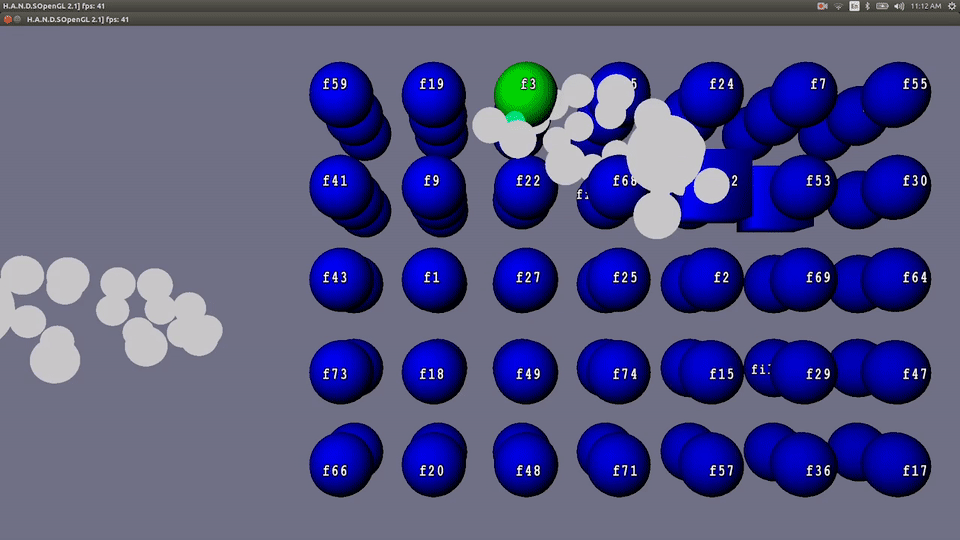
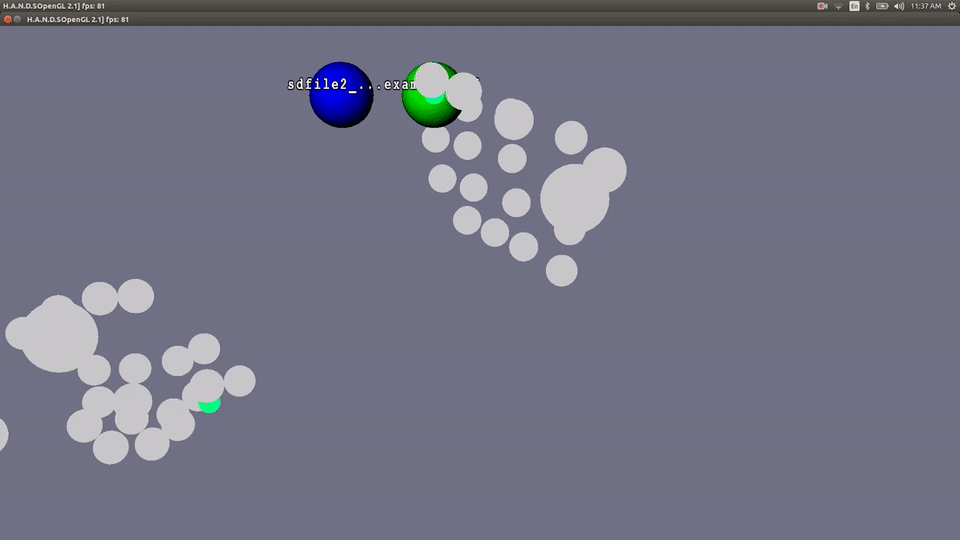

Virtual Reality and Augmented Reality technologies are becoming more popular every day. They bring with them the interesting challenge of interaction in a 3D environment. Mouse and keyboard are not enough, and that's where the Leap Motion comes in. The Leap Motion is a sensor device that tracks the position of hands in 3D space. Using this, we decided to tackle 3D user interfaces by creating a file manager. We decided to make a desktop application primarily because VR/AR technologies are still far from widespread distribution. This application can be a stepping stone for the common user, getting them used to gesture-based input to ease the transition to VR/AR.
Our goal was to create an environment suited to the world of three dimensions. By customizing Leap Motion gestures we were able create natural expressions for common functions. The intuitive gestures bridge the current gap between 3D entertainment and the platforms they run on.
Our program covers the core functionality required by any file explorer. The most important features are quickly navigating through the file system, copying and pasting objects, and opening files. In addition we support undoing and redoing actions. Each of these can be performed using simple and intuitive gestures, such as pinching, swiping, or making a circle.
Unlike traditional file explorers, files and directories are displayed in three dimensional space, vastly increasing the number of entries that can be viewed on a single screen, reducing the need for scrolling. Additionally, files can be organized in a more intuitive way, allowing for more efficient workflow.
While much of the core functionality exists, much remains to be done on this product. More features need to be added, the visual design needs to be reworked, and gesture control can be refined.